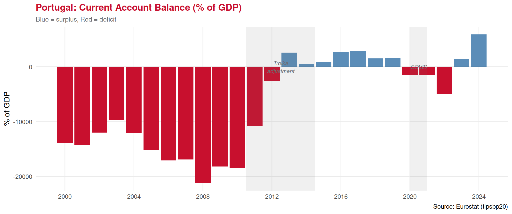
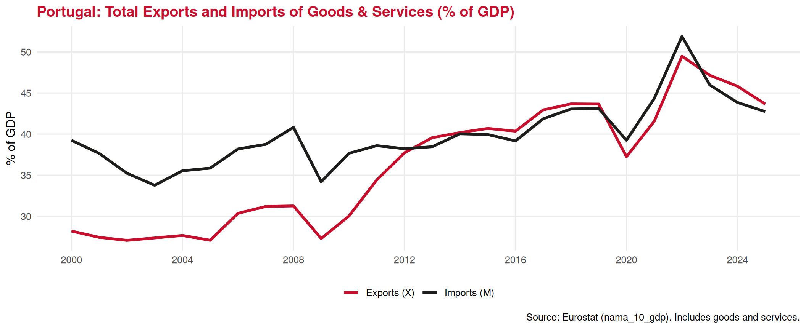
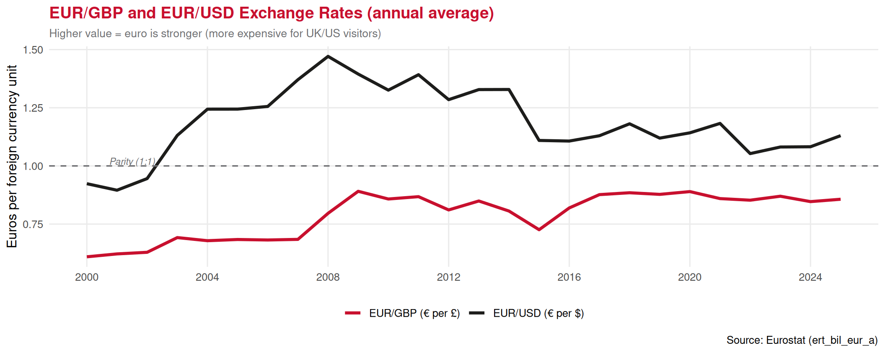

The Balance of Payments
Lecture 26: The Current Account and International Transactions
2026
Recap: Fiscal Policy ⏪
Last lecture: the government’s lever for managing the economy:
✅ Expansionary — raise G / cut taxes → stimulate AD → fight recession
✅ Contractionary — cut G / raise taxes → cool AD → fight inflation or debt
✅ The multiplier: one euro of government spending triggers more than one euro of GDP
✅ Automatic stabilisers: unemployment benefits and tax cycles cushion downturns automatically
✅ Portugal’s story: Troika austerity 2011–2014 → recovery → surplus 2019 → COVID stimulus 2020
👉 Today — the last lecture of the course 🎓
We zoom out to the global picture: how do we record all of a country’s international transactions?
Part I: What is the Balance of Payments?
Every Transaction With the World 🌐
Every time a Portuguese resident interacts economically with a foreign counterpart, that transaction needs to be recorded somewhere.
🏨 A German tourist pays €200/night at a Lisbon hotel
✈️ A Portuguese student buys a flight on Ryanair (Irish company)
🏭 Volkswagen sends dividend payments from its Portuguese plant to Germany
🏦 A Portuguese bank borrows from a French bank
🇪🇺 Portugal receives EU structural funds
The Balance of Payments (BoP) is a systematic record of all economic transactions between residents of a country and the rest of the world over a given period of time. It always balances — every transaction has a debit and a credit entry.
The Structure of the Balance of Payments 📊
The BoP is divided into three main accounts:
🛒 Current Account
Records flows of goods, services, income, and transfers
- Trade in goods
- Trade in services (tourism is here)
- Primary income (wages, dividends)
- Secondary income (remittances, aid)
🚧 Capital Account
Records transfers of non-produced, non-financial assets
- EU structural funds & grants
- Debt forgiveness
- Relatively small for most countries
🏦 Financial Account
Records flows of financial assets and liabilities
- Foreign Direct Investment (FDI)
- Portfolio investment (stocks, bonds)
- Other investment (bank loans)
- Reserve assets
The fundamental identity: \[\text{Current Account} + \text{Capital Account} + \text{Financial Account} = 0\] Every euro that leaves the current account must come back through the financial account — the BoP always balances.
Part II: The Current Account in Depth
Current Account Components 🧾
Current Account records all flows of real resources (goods, services, income) between a country and the rest of the world. \[CA = \text{Trade in Goods} + \text{Trade in Services} + \text{Primary Income} + \text{Secondary Income}\]
| Component | Credit (inflow) | Debit (outflow) |
|---|---|---|
| Goods | Exports of goods | Imports of goods |
| Services | Tourism receipts, transport | Tourism abroad, freight |
| Primary income | Wages earned abroad, dividends received | Profits sent to foreign owners |
| Secondary income | Remittances received, EU transfers | Remittances sent abroad, contributions |
🏖️ Tourism sits in “Services” — one of the most important items in Portugal’s current account.
Trade in Goods vs Trade in Services 📦
📦 Trade in goods (the “visible trade balance”)
Physical products that cross borders: - Portugal exports: wine, cork, footwear, machinery, olive oil - Portugal imports: cars, petroleum, electronics, machinery
Portugal typically runs a goods trade deficit — imports more goods than it exports.
🤝 Trade in services (the “invisible trade balance”)
Intangible services: - Portugal exports services: tourism (foreigners visiting), transport, financial services - Portugal imports services: travel abroad by Portuguese residents, shipping
Portugal runs a services trade surplus — and tourism is the main reason.
👉 Tourism receipts are one of Portugal’s most powerful economic engines, consistently offsetting the goods deficit.
Current Account Balance — Portugal 🇵🇹

👉 Portugal ran persistent current account deficits before 2013 — a key driver of the debt crisis. The adjustment to surplus was painful but necessary.
Part III: Tourism in the Balance of Payments
Tourism as an Export of Services ✈️
This is one of the most important conceptual points of the course:
A foreign tourist spends money in Portugal That spending counts as an export of services — money flows into Portugal from abroad, appearing as a credit in the current account.
When a Portuguese resident travels abroad, that spending counts as an import of services — money flows out of Portugal, appearing as a debit in the current account.
Inbound tourism = export of services
🇩🇪 German tourist in Algarve: spends €1,500
🇬🇧 British tourist in Lisbon: spends €800
🇺🇸 American tourist in Porto: spends €2,000
→ All of these increase Portugal’s current account credit
👉 Portugal does not need to ship anything — the tourist comes to us. Tourism is an “invisible export.”
Outbound tourism = import of services
🇵🇹 Portuguese family holidays in Spain: spends €1,200
🇵🇹 Portuguese student studies in UK: pays tuition €15,000
→ These increase Portugal’s current account debit
💡 Net tourism balance = inbound receipts − outbound expenditure
Portugal’s net tourism balance is strongly positive — we receive far more from foreign visitors than we spend abroad.
Portugal’s Tourism in the Current Account 📈

Why Tourism Matters So Much for Portugal 🇵🇹
Tourism is Portugal’s most important single export — larger than any manufactured good.
What makes Portugal’s tourism balance so powerful:
1️⃣ High receipts per visitor — Lisbon and Algarve attract high-spending segments
2️⃣ Low import content — Portuguese hospitality relies heavily on domestic food, wine, labour, and culture. Unlike manufacturing, it doesn’t require importing lots of components.
3️⃣ Year-round growth — pre-COVID, tourism demand was growing every year (2013–2019 was a golden period)
4️⃣ Services deficit elsewhere — Portugal pays for freight, insurance, and financial services imported from abroad; tourism is the main offset
👉 When tourism collapses (as in 2020), Portugal’s current account deteriorates sharply — as clearly visible in the chart.
The structural importance:
Portugal’s historical current account deficit (pre-2013) was driven by importing more goods than it exported.
The correction came through:
- Painful reduction of imports (recession cut demand)
- Massive growth of tourism exports (2013–2019)
Tourism — as a service export — was essential to Portugal’s economic rebalancing. This is a live example of the macroeconomic role tourism plays.
Part IV: Exchange Rates and the Current Account
The Exchange Rate 💱
The exchange rate is the price of one currency in terms of another.
A depreciation of the euro (€ becomes cheaper relative to £, $, etc.) → Portugal becomes cheaper for foreign visitors → tourism exports rise
An appreciation of the euro (€ becomes more expensive) → Portugal becomes pricier for non-euro visitors → tourism exports fall
Portugal in the Eurozone:
Since 1999, Portugal uses the euro — no independent exchange rate.
The euro/sterling and euro/dollar exchange rates are determined by ECB policy and market forces, not by Portugal alone.
👉 A weak euro (as in 2022–2023) boosted UK and US visitor numbers in Portugal — holidays became cheaper in pound and dollar terms.
Real vs Nominal Exchange Rate:
The nominal rate is the raw currency ratio.
The real exchange rate adjusts for inflation differences:
\[q = \frac{e \times P^*}{P}\]
Where \(e\) = nominal rate, \(P^*\) = foreign prices, \(P\) = domestic prices.
👉 If Portuguese inflation is higher than UK inflation, Portugal becomes relatively more expensive for British tourists — even if the nominal exchange rate is unchanged.
Exchange Rates and Tourism Flows ✈️

👉 Brexit (2016) caused a sharp GBP depreciation — British tourists found Portugal more expensive overnight. A key example of exchange rate risk for tourism.
Part V: Tying It All Together
The Macro Block — What We Have Learned 📚
Over the last seven lectures, we have built a complete macroeconomic framework:
Measurement tools:
✅ Aggregation — summing individual transactions into economy-wide totals
✅ GDP — the economy’s total output (C+I+G+NX)
✅ Inflation (CPI/HICP) — the general price level
✅ Balance of Payments — recording all international transactions
Policy tools:
✅ Monetary policy (ECB) — interest rates control credit and spending
✅ Fiscal policy (Government) — taxes and spending control aggregate demand
Key tensions:
🔄 Growth vs inflation
🔄 Stimulus vs debt sustainability
🔄 Competitiveness vs price stability
Tourism Through Every Macro Lens 🏖️
| Macro concept | Tourism connection |
|---|---|
| GDP | Tourism receipts from abroad = export of services, part of NX |
| Inflation | Hotel/restaurant CPI tracked directly; cost competitiveness |
| Unemployment | Tourism creates 9%+ of Portuguese employment |
| Monetary policy | Low rates → investment boom; high rates → investment pause |
| Fiscal policy | Tourist taxes; COVID subsidies; VAT on hospitality |
| Current account | Tourism = Portugal’s largest service export; key to external balance |
| Exchange rates | Euro strength vs £ and $ directly affects inbound visitor numbers |
👉 Tourism is not just an industry — it is a macroeconomic phenomenon that appears in every major indicator we have studied.
Course Wrap-Up 🎓
What you can now do:
🔬 Apply microeconomic reasoning — consumer choice, producer decisions, market equilibrium
♟️ Think strategically — game theory, Nash equilibrium, backward induction
🔭 Read macroeconomic data — GDP, inflation, current account, policy stances
🏖️ Connect it all to tourism — the industry you are training for
What comes next:
📆 Test 2 — May 28th
Covers: Producer theory (Lectures 11–17) + Macroeconomics (Lectures 20–26)
👥 Group Presentations — May 29th
📚 For the final exam: the whole course
💪 You’ve covered more economics in one semester than most business graduates do in a full year. Well done.
Exercises
📝 Exercise 1 — Multiple Choice
A British travel company brings 5,000 tourists to Portugal each summer, each spending an average of €1,200 in the country. From the perspective of Portugal’s Balance of Payments, how are these transactions classified?
(A) As imports of services in Portugal’s current account — Portugal is buying tourism from the UK
(B) As exports of services in Portugal’s current account — Portugal is providing tourism services to foreigners
(C) As Foreign Direct Investment in Portugal’s financial account — British money entering the Portuguese economy
(D) As secondary income in Portugal’s current account — it represents a transfer from the UK to Portugal
Correct answer: (B)
When foreigners spend money on services provided in Portugal, it is an export of services — Portugal is “selling” tourism to the UK. This creates a credit in the services component of the current account, improving Portugal’s current account balance. Option A confuses the direction. Option C would apply if the British company was buying a Portuguese hotel. Option D (secondary income) covers transfers like remittances, not market transactions.
📝 Exercise 2 — Multiple Choice
In 2016, the UK voted to leave the EU (Brexit). The British pound immediately depreciated approximately 15% against the euro. Which of the following best describes the likely short-run effect on Portugal’s tourism sector?
(A) Positive — British tourists now find Portugal 15% cheaper, increasing inbound demand
(B) Negative — British tourists find Portugal 15% more expensive, reducing inbound demand
(C) Neutral — exchange rate changes do not affect tourism as prices are set in local currency
(D) Positive — a weaker pound means Portuguese tourists can holiday more cheaply in the UK, boosting Portugal’s imports
Correct answer: (B)
A GBP depreciation means each pound buys fewer euros. From a British tourist’s perspective, Portuguese prices (in euros) now cost more pounds. A €100 hotel night that cost £85 before depreciation now costs £100. This reduces the real purchasing power of British visitors in Portugal, lowering demand for Portuguese tourism. Option A gets the direction backwards. Option D describes an increase in Portuguese imports (outbound tourism), which worsens Portugal’s current account — the opposite of helping the tourism sector.
📝 Exercise 3 — Open Question
The table below shows simplified Balance of Payments data for Portugal in a given year (€ billion):
| Item | Value (€bn) |
|---|---|
| Goods exports | 65 |
| Goods imports | −85 |
| Services exports (incl. tourism) | 45 |
| Services imports | −22 |
| Primary income (net) | −8 |
| Secondary income (net) | +4 |
| Capital account (net) | +3 |
| Financial account (net) | ? |
(a) Calculate the trade in goods balance, the trade in services balance, and the current account balance.
(b) Using the fundamental BoP identity, calculate the financial account balance.
(c) Tourism receipts account for €28bn of the services exports figure. Calculate tourism’s share of total goods and services exports, and briefly explain what this implies for Portugal’s economic vulnerability.
Solution
(a)
Trade in goods balance = 65 − 85 = −€20bn (goods deficit)
Trade in services balance = 45 − 22 = +€23bn (services surplus)
Current account = (65−85) + (45−22) + (−8) + 4 = −20 + 23 − 8 + 4 = −€1bn (small deficit)
(b)
BoP identity: Current Account + Capital Account + Financial Account = 0
−1 + 3 + Financial Account = 0 → Financial Account = −€2bn
(A negative financial account = net capital outflow, meaning Portugal is acquiring more foreign assets than foreigners are acquiring Portuguese assets — consistent with a small current account deficit.)
(c)
Total goods + services exports = 65 + 45 = €110bn
Tourism share = 28 / 110 × 100 = 25.5%
This implies significant concentration risk: a quarter of all export earnings comes from a single sector that is highly sensitive to external shocks (pandemics, exchange rates, terrorism, climate). When tourism collapses (as in 2020), Portugal’s current account deteriorates sharply and the economy loses a critical income source. Diversifying the export base — developing manufacturing, tech, and other services — would reduce this vulnerability.
Summary 📚
Today we covered:
✅ The Balance of Payments — a complete record of all international economic transactions
✅ Three accounts: Current (goods, services, income), Capital (grants, transfers), Financial (investment flows)
✅ The fundamental identity: CA + KA + FA = 0
✅ Tourism as an export of services — foreign spending in Portugal = credit in current account
✅ Portugal’s current account history — chronic deficit pre-2013, adjustment via tourism growth
✅ Exchange rates — EUR/GBP and EUR/USD directly affect inbound tourism competitiveness
✅ Brexit as a live example of exchange rate risk for tourism
🏆 The macro block is complete!
Thank You — and Good Luck! 👋 🍀
Test 2: May 28th
Producer theory (Lectures 11–17) + Macroeconomics (Lectures 20–26)
Group Presentations: May 29th
📧 paulo.fagandini@ext.universidadeeuropeia.pt

Economics of Tourism | Lecture 26